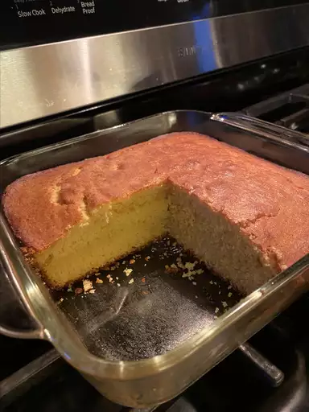

Honey Cornbread
Description
Sweet honey cornbread that will crumble in your hand and melt in your mouth.

Ingridients
- 1 cup all-purpose flour
- 1 cup yellow cornnmeal
- 1/4 cup white sugar
- 1 tablespoon baking powder
- 1 cup heavy cream
- 2 large eggs, lightly beaten
- 1/4 cup vegetable oil
- 1/4 cup honey
Steps
- Preheat the oven to 400 degrees F. Lightly grease a 9x9-inch baking pan.
- Stir together flour, cornmeal, sugar, and baking powder in a large bowl; form a well in the center. Add cream, eggs, oil, and honey; stir until well combined. Pour batter into the prepared baking pan.
- Bake in the preheated oven until a toothpick inserted into the center comes out clean, 20 to 25 minutes.